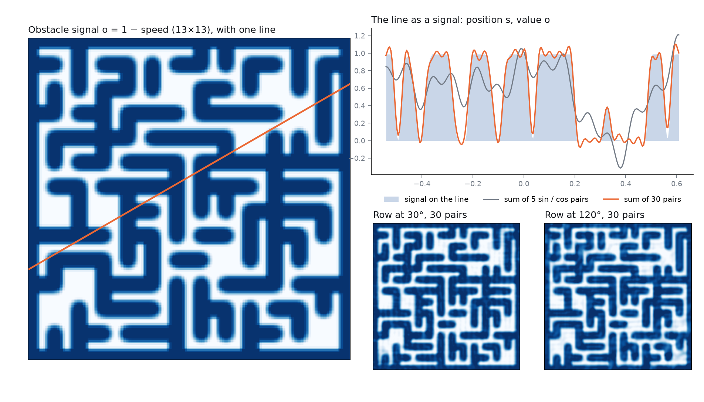
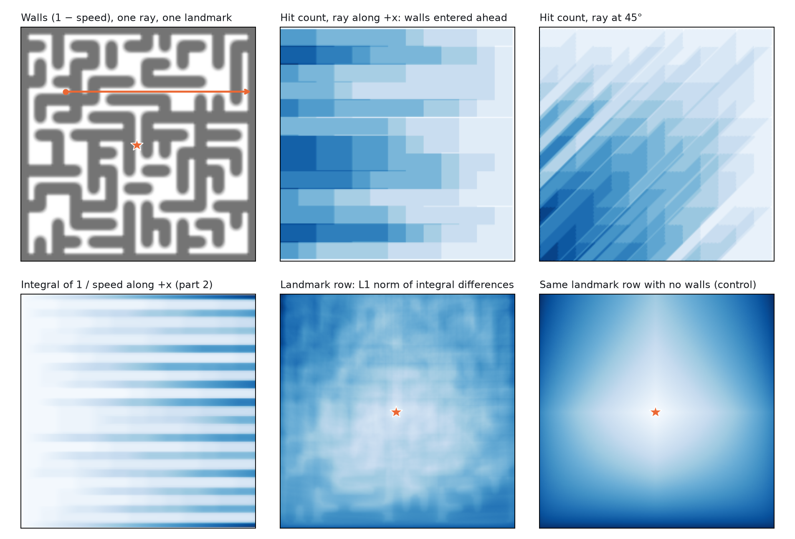

You asked whether Fourier embeddings work better when they capture the speed across the environment. They capture it easily, but planning does not improve. A sum of sin/cos along a line fits the speed with the 20–30 terms you guessed. Yet on the 22×22 maze, 16 such rows take planning from 45.1 % down to 39.1 %, and handing the network the exact speed takes it to 37.1 %.
The likely reason is that speed reads the same on both sides of a wall. The network's T is a distance between two embeddings, so two points are far apart only if their embeddings differ, and speed gives them no difference. Rows that do differ across walls, corridor distance to 16 landmarks, reach 53.4 %, the best result in this study on that maze, though they use the exact maze graph.
A follow-up replaced speed with its integral along the line, which is the travel time along that line. That removes the damage: the exact integral reaches 48.1 %. It still does not beat the 49.6 % of the plain octaves, because a straight-line integral goes through walls and so does not tell the two sides apart either.
A second follow-up dropped the octaves and used the integral embedding alone. It then plans at the level of ntrl-demo's random rows: 54.7 % on 13×13 and 16.1 % on 22×22, against 94.8 % and 56.9 % for the octaves on the same seed.
A third follow-up tried step functions and norms next to the octaves. Counting the walls a ray hits ahead does not help. Putting an L1 norm on the integral does, in one place: 16 landmark rows, each the L1 norm over directions of the integral differences to a landmark cell, reach 52.1 % on 22×22, +7.0 points over empty rows and above the octaves alone.
For each direction, I lay lines across the maze in that direction. Along each line I fit a sum of M terms, each a sin and cos pair at one frequency, to the obstacle signal o = 1 − speed, which is 0 where speed is high and 1 where it is low. Frequencies are the strongest peaks of that direction's own spectrum, not a fixed octave ladder. A point (x, y) then maps to one number per direction: the value of that direction's sum at the point. That gives the n rows you described.
The rows go into the input layer of the ntrl-demo network. An octave row takes two inputs (sin and cos) and a speed row takes one, so the main form keeps 120 of the 128 octave rows and puts 16 speed rows in the 16 freed inputs. Everything else stays the same: 256 inputs, network, initial weights, loss and planner. Speed comes from the ground truth. I did not run learned speed, because exact speed is the upper bound on what any learned speed could give, and exact speed already fails to help.

The fit reaches R² 0.92 at 20 terms and 0.95 at 30 on the 13×13 maze, and 0.81 and 0.90 on the 22×22 maze. It stops improving by 60 terms. So your starting range of 20–30 was about right.
There is a catch in the right-hand chart. As the fit improves, the rows stop being different from each other. With 32 directions, the effective rank falls from 3.7 at 5 terms to 1.4 at 30 on the 13×13 maze. A perfect fit makes every direction the same map, because the speed at a point does not depend on which line you reached it by. So extra directions add no new information once the fit is good.
The fair comparison is against two controls, both with the same 16 slots in the input. Empty rows set those slots to zero. Flipped rows use the same table read at (−x, −y), so they have the same shapes and statistics but the walls are in the wrong place. If speed helps, true rows must beat both. The chart shows success over 3 training seeds and 3 planning seeds.
On 22×22, true speed rows are −6.0 points against empty rows, lower on 3 of 3 seeds (−9.0 / −4.2 / −4.9). They are −3.7 points against flipped rows (−8.7 / +1.3 / −3.6). So the real walls cost more than walls in the wrong place. Exact speed gives the same picture more clearly: −8.0 against empty, and −4.7 against flipped, lower on 3 of 3 seeds. The exact rows also carry heading, which the line rows do not, so this is not a limit of the line fit.
On 13×13 the differences are small: 92.2 % empty, 92.0 % flipped, 89.5 % true. True rows are below flipped on 3 of 3 seeds (−2.5 points), but this maze is near its ceiling and seeds move by several points.
None of the rows beat the octave network (49.6 % and 94.8 %), which has 128 octave rows, except the distance rows on 22×22.
You suggested working up from 20–30 terms. I ran 5, 15, 30, 60 and 120. If speed helped, a better fit should plan better. It goes the other way.
On 22×22, success falls from 43.6 % at 5 terms to 39.1 % at 30 and 35.6 % at 60, then stays at 36.2 % for 120. Flipped rows fall much less: 43.0 %, 42.8 %, 41.0 %. So most of the loss comes from the fit landing on the real walls, not from having more terms. At 5 terms, where the fit is poor (R² 0.43), true and flipped rows are about equal.
13×13 falls the same way over three seeds: 93.2 %, 92.8 %, 89.5 %, 87.2 %, 86.8 %. Empty rows are at 92.2 %, so the low-term rows are within seed noise of the control there and the high-term rows are below it. I ran the flipped control only at 30 terms on this maze.
On 22×22 the trained field shows the same trend. Separation is T between wall-adjacent cell centres, divided by their corridor distance. With true walls it falls from 0.36 at 5 terms to 0.26 at 60, and the difference across walls falls from 0.50 to 0.32 of the true value. Flipped rows lose much less. Over the 15 sweep runs, the rank correlation between separation and success is +0.95. The next section explains why this matters.
13×13 is different. Separation barely moves there (0.88 to 0.86), and the difference across walls is already above the true value, so separation cannot explain its 93.2 to 86.8 % fall. That fall goes with wall leaks, which rise from 0.04 at 15 terms to 0.30 at 30 (rank correlation with success −0.77), and with bumps along paths (−0.85). I can't say why the ridge weakens past 15 terms. It happens on both mazes, and exact speed still makes the tallest ridge.
This asks your question directly across every arm. For each trained run I measured how much of the speed can be read from its input features, after one random layer. If capture drives planning, the marks should rise to the right.
They do not. On 22×22 the octave network carries almost no readable speed (0.01) and plans at 49.6 %, while exact speed carries all of it (1.00) and plans at 37.1 %. The distance rows carry almost none (0.02) and plan best. Over all scored runs, the rank correlation between readable speed and success is −0.12 on 22×22 (102 runs) and +0.22 on 13×13 (70 runs).
On 13×13 octaves do carry speed (0.60) and ntrl-demo does not (0.01), so that maze alone would seem to support the hypothesis. The 22×22 maze separates the two: octaves still plan far better than ntrl-demo there (49.6 % against 23.4 %) with nothing readable. Their advantage comes from somewhere other than speed.
In ntrl-demo, T(q, g) is a distance between two embeddings, f(q) and f(g), through one shared encoder. Two points are far apart in T only if f separates them. Take two points on opposite sides of a wall, close in space but far by corridor. They have the same speed, so speed rows give f nothing to tell them apart. A wall needs two things from T: a ridge on the wall, and a large difference between the two sides.
The chart shows T along a line through a wall, from the side far from the goal (left) to the near side (right), with T set to 0 on the near side. In truth, T is much higher on the far side, and it rises further on the way into the wall.
Exact speed gives a tall ridge (rise 3.4 cells on 22×22, no leaks) but the far side barely lifts: the jump between sides is 0.24 of the true jump, against 0.78 with empty rows. Distance rows keep the jump at 0.95. A ridge also does not keep the planner off the wall. Nearly every failure in this study is a collision (54.9 % of 22×22 attempts with empty rows, 62.9 % with exact speed, and 0.0 % that fail any other way), so the tallest ridge comes with the most wall hits.
The same holds per run. Over 72 runs on 22×22 with octave, speed, exact-speed and distance rows, success has a rank correlation of 0.66 with separation. Rise does not order the arms: exact speed has the tallest ridge and the lowest success.
To test this causally, I froze the added rows of both endpoints to one constant in an already-trained network, then re-measured. If the rows make the ridge but not the separation, freezing should delete the ridge and leave the jump alone. If rows carry separation, the jump should fall.
That is what happened. For speed rows, freezing takes the rise from 1.00 to 0.00 and leaves the jump at 0.36 (was 0.39). For exact speed, the rise goes from 3.4 to 0.00 and the jump stays at 0.24. For distance rows the jump falls from 0.95 to 0.35, so those rows do carry the separation. Freezing them also disturbs the rest of the field (the rise goes from 1.2 to 8.0), so that fall is evidence, not a clean subtraction. Their flipped twin does not change much when frozen (0.78 to 0.81) and plans like empty rows (45.4 % against 45.1 %).
Across walls, the change in the rows tracks corridor distance with a rank correlation of 0.79 for distance rows, 0.15 for exact speed and −0.10 for speed rows.
What remains unexplained is why speed rows lower separation rather than just not adding to it. Separation is 0.49 with empty rows, 0.29 with speed rows and 0.23 with exact speed, and that lower level survives freezing. So the octave rows themselves ended up separating less. My reading is that the ridge lowers the loss near walls, which removes the pressure for the rest of the network to build separation. That part is an interpretation. I did not test it directly.
Separation alone is also not enough. ntrl-demo has the highest separation of any arm (0.67 on 22×22) and plans at 23.4 %. Its field is rough in other ways, with 1.62 bumps per path against 0.35 for empty rows.
| maze | rows | success % | leak | rise | rise frozen | jump | jump frozen | sep | sep frozen | bumps |
|---|---|---|---|---|---|---|---|---|---|---|
| 22×22 | ntrl-demo | 23.4 | 0.41 | 0.14 | – | 0.76 | – | 0.67 | – | 1.62 |
| 22×22 | 128 octave rows | 49.6 | 0.31 | 0.62 | – | 0.77 | – | 0.49 | – | 0.32 |
| 22×22 | 120 octaves + 16 empty | 45.1 | 0.31 | 0.72 | – | 0.78 | – | 0.49 | – | 0.35 |
| 22×22 | + 16 speed rows, flipped | 42.8 | 0.38 | 0.42 | 0.00 | 0.55 | 0.54 | 0.38 | 0.38 | 0.95 |
| 22×22 | + 16 speed rows | 39.1 | 0.21 | 1.00 | 0.00 | 0.39 | 0.36 | 0.29 | 0.29 | 1.33 |
| 22×22 | + exact speed, flipped | 41.8 | 0.16 | 2.16 | 0.07 | 0.47 | 0.47 | 0.33 | 0.33 | 1.38 |
| 22×22 | + exact speed | 37.1 | 0.00 | 3.36 | 0.00 | 0.24 | 0.24 | 0.23 | 0.23 | 1.65 |
| 22×22 | + 16 distance rows, flipped | 45.4 | 0.33 | 0.47 | 1.73 | 0.78 | 0.81 | 0.52 | 0.54 | 0.47 |
| 22×22 | + 16 distance rows | 53.4 | 0.20 | 1.17 | 7.99 | 0.95 | 0.35 | 0.58 | 0.44 | 0.27 |
| 13×13 | ntrl-demo | 58.9 | 0.20 | 0.76 | – | 1.70 | – | 1.14 | – | 0.05 |
| 13×13 | 128 octave rows | 94.8 | 0.18 | 2.38 | – | 1.27 | – | 0.92 | – | 0.04 |
| 13×13 | 120 octaves + 16 empty | 92.2 | 0.18 | 2.15 | – | 1.28 | – | 0.92 | – | 0.03 |
| 13×13 | + 16 speed rows, flipped | 92.0 | 0.26 | 1.32 | 0.03 | 1.25 | 1.25 | 0.91 | 0.91 | 0.06 |
| 13×13 | + 16 speed rows | 89.5 | 0.30 | 0.29 | 0.00 | 1.15 | 1.12 | 0.85 | 0.85 | 0.07 |
| 13×13 | + exact speed, flipped | 86.0 | 0.11 | 2.42 | 0.09 | 1.16 | 1.17 | 0.88 | 0.88 | 0.15 |
| 13×13 | + exact speed | 88.0 | 0.00 | 3.22 | 0.00 | 1.02 | 1.02 | 0.82 | 0.82 | 0.14 |
| 13×13 | + 16 distance rows | 91.2 | 0.12 | 2.82 | 5.19 | 1.30 | 0.73 | 0.88 | 0.89 | 0.04 |
Leak: share of wall segments and goals with no rise on the high side. Rise: median height of the ridge in cells (truth about 9.4 on 22×22). Jump: T difference between the two sides, divided by the true difference. Sep: T divided by corridor distance for wall-adjacent cell centres at least 4 corridor steps apart. Bumps: local minima of T per true path. Frozen: the study's rows of both endpoints pinned to their median. Means over seeds. On 13×13 the 30-term speed rows make a lower ridge than empty rows (rise 0.29 against 2.1), while 15-term rows make a taller one (2.9). On 22×22 the 30-term rise varies a lot by seed. So a ridge from heading-blind rows is not reliable, and only exact speed makes one every time. On 13×13 the jump stays above 1 in every arm, which fits speed rows costing little there.
You then asked for rows built on travel time, the integral of 1 / speed along the line, in place of speed itself. The sin/cos fit now targets 1 / speed, and each row is the running integral of that fit from the point where the line enters the maze. The integral of each sin/cos term is again a sin/cos term, and the constant becomes a ramp, so the row is still a sum of sin and cos. A 30-term row matches the exact integral with R² 0.997 on 22×22.
I ran the three versions you described: the summed integral as 16 rows, the per-term integrals as separate channels, and integral rows next to speed rows. The integral removes the damage the speed rows did, and adds a little over empty rows, but it does not beat the octaves. On 22×22 the exact integral reaches 48.1 % and the 30-term integral 47.4 %, against 45.1 % with those 16 slots empty, 39.1 % with the speed rows of the first part, and 49.6 % with all 128 octave rows.
| rows | 22×22 | per seed, of 720 | points against its control | flipped true − flipped | jump | frozen | sep | bumps |
|---|---|---|---|---|---|---|---|---|
| 128 octave rows | 49.6 % | 410 / 327 / 334 | – | – | 0.77 | – | 0.49 | 0.32 |
| 120 octaves + 16 empty (control) | 45.1 % | 344 / 318 / 312 | – | – | 0.78 | – | 0.49 | 0.35 |
| + 16 speed rows, 1 − speed (first part) | 39.1 % | 279 / 288 / 277 | −9.0 / −4.2 / −4.9 | 42.8 % −8.7 / +1.3 / −3.6 | 0.39 | 0.36 | 0.29 | 1.33 |
| + 16 slowness rows (1 / speed), not integrated | 45.2 % | 353 / 320 / 303 | +1.2 / +0.3 / −1.3 | – | 0.54 | 0.52 | 0.37 | 1.29 |
| + 16 integral rows, 30 terms | 47.4 % | 358 / 312 / 354 | +1.9 / −0.8 / +5.8 | 42.6 % +2.6 / +7.2 / +4.6 | 0.84 | 0.86 | 0.54 | 0.68 |
| + 16 integral rows, exact | 48.1 % | 365 / 342 / 331 | +2.9 / +3.3 / +2.6 | 47.4 % +3.3 | 0.83 | 0.88 | 0.51 | 0.31 |
| + 16 integral rows, share of the line total | 44.7 % 2 seeds | – / 331 / 313 | +1.8 / +0.1 | – | 0.85 | 1.01 | 0.55 | 0.43 |
| + 8 integral rows + 8 speed rows | 42.1 % | 302 / 286 / 322 | −5.8 / −4.4 / +1.4 | 45.4 % −3.5 | 0.45 | 0.44 | 0.33 | 1.05 |
| + 16 distance rows (uses the maze graph) | 53.4 % | 417 / 374 / 362 | +10.1 / +7.8 / +6.9 | 45.4 % +11.0 / +6.8 / +6.1 | 0.95 | 0.35 | 0.58 | 0.27 |
| 64 octaves + 128 empty (control) | 36.9 % | 269 / 250 / 278 | – | – | 0.98 | – | 0.61 | 0.35 |
| 64 octaves + 128 per-term integrals | 30.6 % | 206 / 230 / 224 | −8.8 / −2.8 / −7.5 | 31.1 % −2.5 | 0.25 | 0.20 | 0.26 | 6.43 |
22×22 maze, three training seeds unless a count is shown. Controls: 16 empty slots for the 16-row arms, 128 empty slots for the per-term arm. Flipped rows are the same rows read at (−x, −y), compared on the seeds that have both. Jump is the field's difference across a wall as a fraction of the true difference; frozen pins the rows of both endpoints to a constant in the trained network. Sep is T over corridor distance across walls. Bumps are local minima of T along the true path of a long query, per path. The share-of-line arm was stopped early, so it has two seeds. The 13×13 arms have one seed and are in the list below.
The integral runs along a straight line, and a straight line goes through walls. Two points on opposite sides of a wall differ in the row by the time to cross the wall, not the time to go around it. Speed is at its floor everywhere near a wall, which is over a third of the maze, so the row climbs as fast along a wall as across one. Measured on the rows before any training, the difference across a wall divided by the difference across an open passage is 1.03 for the 30-term integral and 1.04 for the exact one. Speed rows give 0.95 and distance rows 4.27.
The trained fields agree. With integral rows the jump is 0.84, and pinning the rows leaves it at 0.86, so the octave rows still carry all the separation. Distance rows are the only ones that carry it themselves (0.95 intact, 0.35 frozen). The integral rows are smooth ramps across the maze, which makes them position-like features, and position is what the octaves already supply.
You pointed out that the integral rows above only sat on top of the octaves, and that your idea was to drop the octaves and use this embedding alone. I ran that. The network's 256 inputs become 240 integral rows, one per line direction, plus 8 sin/cos rows of the heading alone, so position reaches the network only through the integrals.
Alone, the integral embedding plans at the level of ntrl-demo's random rows, about 40 points below the octaves. The exact integral reaches 54.7 % on 13×13 and 16.1 % on 22×22. On the same training seed ntrl-demo reaches 57.8 % and 21.1 %, and the octaves 94.8 % and 56.9 %. The per-term matrix and the integral combined with speed rows fail outright.
| embedding | 13×13 | 22×22 | T / T* | jump | direction | bumps | rank |
|---|---|---|---|---|---|---|---|
| 128 octave rows (reference) | 94.8 % | 56.9 % | 1.11 / 1.27 | 1.24 / 0.79 | 0.99 / 0.98 | 0.0 / 0.3 | 91 / 109 |
| ntrl-demo's 128 random rows (reference) | 57.8 % | 21.1 % | 1.31 / 1.24 | 1.70 / 0.68 | 0.99 / 0.95 | 0.1 / 1.9 | 14 / 14 |
| exact integral only | 54.7 % | 16.1 % | 1.04 / 0.60 | 1.10 / 0.14 | 0.98 / 0.82 | 1.0 / 16.6 | 6.2 / 5.5 |
| 30-term integral only | 42.8 % | 18.1 % | 1.04 / 0.57 | 1.08 / 0.11 | 0.98 / 0.78 | 1.0 / 17.7 | 6.0 / 5.4 |
| 30-term integral only, walls flipped (control) | 37.3 % | 10.0 % | 1.03 / 0.33 | 1.09 / 0.03 | 0.98 / 0.49 | 1.6 / 27.5 | 6.1 / 5.4 |
| length along the line only (control: no walls in it) | 40.3 % | 13.2 % | 1.25 / 1.14 | 1.61 / 0.26 | 0.99 / 0.92 | 0.1 / 2.4 | 3.1 / 3.2 |
| integral rows + speed rows | 11.5 % | 6.8 % | 0.17 / 0.11 | 0.01 / 0.01 | 0.16 / 0.11 | 22.4 / 39.8 | 8.1 / 8.6 |
| one channel per sin/cos term (the matrix) | 6.0 % | 3.3 % | 0.10 / 0.09 | 0.00 / 0.00 | 0.02 / 0.01 | 34.5 / 49.9 | 169 / 187 |
| one channel per term, walls flipped (control) | 6.2 % | 3.3 % | 0.11 / 0.09 | 0.00 / 0.00 | 0.03 / 0.02 | 36.5 / 49.6 | 170 / 188 |
| speed rows only (first part) | 9.3 % | 5.0 % | 0.10 / 0.07 | 0.00 / 0.00 | 0.00 / 0.01 | 27.4 / 44.1 | 2.4 / 3.8 |
One training seed (87358), 600 planning attempts on 13×13 and 720 on 22×22. Paired figures are 13×13 / 22×22. T / T* is the median of the field's time over the true time. Jump is the field's difference across a wall as a fraction of the true difference. Direction is the median cosine between the field's descent direction and the true path. Bumps are local minima of T along the true path of a long query, per path. Rank is the effective rank of the embedding over held-out points, before training.
Each integral row is a ramp across the maze with steps at the walls. Across 240 directions the ramps are nearly the same two coordinates seen from different angles. The effective rank of the embedding is 6.2 on 13×13, against 91 for the octaves and 14 for ntrl-demo's random rows. The network gets a smooth position code with wall detail on it, and no ladder of scales to build sharp walls from.
The trained fields show the two halves of that. With no walls in the rows, the 22×22 field is smooth and has the right scale (T / T* 1.14, 2.4 bumps per path), but 0.77 of wall segments have no rise at all. With the real integral the walls appear (only 0.09 of segments without a rise), but the field is compressed (T / T* 0.60), the difference across a wall is 0.14 of the true one against 0.79 for the octaves, and T has 16.6 local minima per path. On 13×13 the exact-integral field is close to correct in scale and separation (1.04 and 1.10), and it plans like ntrl-demo.
The three failing embeddings share one signature. Local speed is fitted well (correlation 0.96 for the per-term matrix), but T is a tenth of the true time, the difference across walls is zero, and the descent direction is unrelated to the true path (cosine 0.02). Rank does not explain it: the per-term matrix has rank 169, the highest of any embedding here. I have not found the cause. Each of the three contains channels that follow the local speed pattern, either speed rows or single terms of the fit. Each also contains ramps, and the ramps do not rescue it.
These are one training seed each, and seed noise on these mazes is several points. The 40-point gap to the octaves and the collapse of the matrix are far outside that. The gains from the walls on 22×22 are not.
You asked for two tests, both next to the octaves. Test 1 is a step function: shoot a ray from the point in a direction and count how many times it passes from free space into a wall. Test 2 keeps the integral of 1 / speed and puts an L1 or L∞ norm on it, in a place I was to choose. Every arm here is 120 octave rows plus 16 new rows, and the control is the same network with those 16 rows set to zero.
One placement of the norm works. Landmark rows, the L1 norm over 64 directions of the integral differences between a point and a landmark cell, raise 22×22 planning from 45.1 % to 52.1 %. The gain is +7.2 / +9.3 / +4.4 points on the three training seeds. Pooled, that is above the 49.6 % of the plain octaves, though not on every seed (−1.9 / +8.1 / +1.4 points). It is close to the 53.4 % of the corridor-distance rows, which need the maze graph. The landmark rows need only the speed map. On 13×13, which is near its ceiling, they show no clear gain (93.3 % against 92.2 %).
The ray hit counts do not help. They reach 46.3 %, +1.5 / +2.6 / −0.4 points against empty rows, and the same rows with the walls flipped do no worse at 48.4 %.

| rows next to 120 octaves | 22×22 | per seed, of 720 | points against empty rows | 13×13 | lost when rows pinned | jump | bumps | screen |
|---|---|---|---|---|---|---|---|---|
| 120 octaves + 16 empty (control) | 45.1 % | 344 / 318 / 312 | – | 92.2 % | – | 0.78 | 0.4 | – |
| 128 octave rows | 49.6 % | 410 / 327 / 334 | +9.2 / +1.3 / +3.1 | 94.8 % | – | 0.77 | 0.3 | – |
| + 16 integral rows, no norm (part 2) | 48.1 % | 365 / 342 / 331 | +2.9 / +3.3 / +2.6 | 95.3 % | 52 % | 0.83 | 0.3 | 1.04 |
| + 16 ray hit counts (test 1) | 46.3 % | 355 / 337 / 309 | +1.5 / +2.6 / −0.4 | 90.3 % | 27 % | 0.91 | 0.3 | 1.05 |
| + 16 ray hit counts, walls flipped (control) | 48.4 % | 386 / 327 / 332 | +5.8 / +1.3 / +2.8 | – | 19 % | 0.85 | 0.3 | – |
| integral rows + L1 norm in the distance, trained weight | 45.6 % 1 seed | 328 / – / – | −2.2 | – | – | 0.80 | 0.5 | – |
| integral rows + L∞ norm in the distance, trained weight | 50.7 % 1 seed | 365 / – / – | +2.9 | – | – | 0.85 | 0.2 | – |
| integral rows + L1 norm in the distance, weight fixed at 0.2 | 20.6 % 1 seed | 148 / – / – | −27.2 | – | – | 0.70 | 5.6 | – |
| integral rows + L∞ norm in the distance, weight fixed at 0.2 | 5.7 % 1 seed | 41 / – / – | −42.1 | – | – | 0.92 | 17.0 | – |
| + 16 landmark rows: L1 norm of integral differences | 52.1 % | 396 / 385 / 344 | +7.2 / +9.3 / +4.4 | 93.3 % | 64 % | 0.96 | 0.2 | 1.37 |
| same landmark rows without walls (control) | 46.2 % | 348 / 337 / 313 | +0.6 / +2.6 / +0.1 | – | 48 % | 0.79 | 0.3 | – |
| same landmark rows, walls flipped (control) | 45.3 % | 339 / 342 / 297 | −0.7 / +3.3 / −2.1 | – | 40 % | 0.87 | 0.2 | – |
| + 16 landmark rows: L∞ norm of integral differences | 46.9 % | 368 / 309 / 335 | +3.3 / −1.3 / +3.2 | – | 16 % | 0.80 | 0.4 | 1.09 |
| + 16 landmark rows: L1 norm of hit-count differences | 50.2 % | 348 / 383 / 353 | +0.6 / +9.0 / +5.7 | – | 44 % | 0.78 | 1.2 | 1.59 |
| same hit-count landmark rows, walls flipped (control) | 47.6 % | 351 / 351 / 326 | +1.0 / +4.6 / +1.9 | – | 33 % | 0.86 | 0.3 | – |
| + 16 integral rows divided by their L1 norm over directions | 46.2 % 1 seed | 333 / – / – | −1.5 | – | 40 % | 0.70 | 0.4 | 0.99 |
| + 16 integral rows divided by their L∞ norm over directions | 50.3 % 1 seed | 362 / – / – | +2.5 | – | 35 % | 0.64 | 0.5 | 1.04 |
| + 16 corridor-distance rows (uses the maze graph) | 53.4 % | 417 / 374 / 362 | +10.1 / +7.8 / +6.9 | 91.2 % | 65 % | 0.95 | 0.3 | 4.27 |
22×22 maze, three training seeds unless a count is shown, successes of 720 per seed in the order 87358 / 1 / 2. The 13×13 column pools the seeds that were run. Lost when rows pinned is the share of successes that disappear when the 16 added rows of both endpoints are held at a constant in the trained network. Jump is the field's difference across a wall as a fraction of the true difference. Bumps are local minima of T along the true path of a long query, per path. Screen is measured on the rows before any training: their difference between two adjacent cells across a wall, divided by the same across an open passage, so 1.0 means the rows do not tell the two sides apart.
Sixteen rays, 22.5° apart, counted to the edge of the maze. Each row is a step function: it drops by one when the point passes a wall on its ray. Planning moves by +1.5 / +2.6 / −0.4 points against empty rows, inside the spread between seeds. The rows with the walls flipped do no worse (true minus flipped: −4.3 / +1.4 / −3.2 points), so the placement of the steps carries nothing the network uses. The screen pointed the same way: its score is 1.05. Moving one cell changes the counts about as much through an open passage as across a wall, because the rays in the other directions gain and lose walls either way.
I listed five places and screened them before training.
Two controls isolate the walls. The same landmark rows built with speed 1 everywhere hold no walls and reach 46.2 %. The same rows read at (−x, −y) hold the walls in the wrong place and reach 45.3 %. The true rows beat them by +6.7 / +6.7 / +4.3 and +7.9 / +6.0 / +6.5 points, on every seed.
The rows tell the two sides of a wall apart before any training: their screen score is 1.37, against 1.04 for the 16 integral rows they are built from. The L1 norm sums the differences in all 64 directions, so a wall that changes many of them moves the row. The L∞ norm keeps only the single largest direction, and its screen score is 1.09. That ordering matches the planning results, but I did not test the cause separately.
The trained fields agree. With the landmark rows the difference across a wall is 0.96 of the true one, against 0.78 with empty rows and 0.95 with corridor-distance rows. The network reads the rows when it plans: holding them constant removes 64 % of the successes, against 65 % for the corridor-distance rows, 48 % and 40 % for the two controls, and 27 % for the hit counts. The L∞ landmark rows are barely used: holding them constant removes 16 %.
Landmark rows built from hit counts instead of integrals reach 50.2 %, +0.6 / +9.0 / +5.7 points against empty rows. Their flipped control reaches 47.6 %, and true minus flipped is −0.4 / +4.4 / +3.7 points, so a gain from the walls is not established for them. Their fields are rougher: 1.2 local minima per path against 0.2.
The network's T is zero or more, so an added term can only be corrected downwards by shrinking its weight. At weight 1 the L1 term is already larger than the true travel time on 18 % of the queries and the L∞ term on 27 %, because a straight-line integral crosses walls that the true path goes around. That is the likely reason the trained weight goes to zero. ntrl-demo's weight decay also pulls the weight down, to about 0.002 on its own, so the trained-weight runs alone do not prove that training rejects the term. The fixed-weight runs settle it. With the weight fixed at 0.2 the term exceeds the true time on only 0.4 % and 2 % of the queries, and it still breaks planning: T gets 5.6 local minima per path for L1 and 17.0 for L∞, against 0.3 without the term, and only 25 % and 7 % of the plans reach the goal, against 69 % without it. A straight-line integral jumps when its line moves past a wall end. Those jumps become local minima of T, and the planner stops in them.
The landmark rows reach 93.3 % (3 seeds), against 92.2 % for empty rows and 94.8 % for the octaves on the same seeds. Per seed that is +4.8 / −2.8 / +1.2 points against empty rows, so no gain is established there. The hit counts reach 90.3 % (1 seed), against 90.2 % for empty rows. That maze is close to its ceiling, so it separates little.
No other form beat its flipped twin by more than seed noise, so the result does not hinge on one design. These are mostly one seed, so treat small gaps as noise.
Embed travel distance, not speed. The distance rows use the exact maze graph, so they are a mechanism control and not a method. A practical version would have to learn something like them, for example from early estimates of T, and that is untested.
They also did not help everywhere. On 13×13 they reach 91.2 %, against 92.2 % for empty rows and 94.8 % for octaves. The jump there is already above 1 in every arm, so there was no missing separation to add. Together with the 22×22 result, that fits the idea that these rows help only where separation is short.
Mazes: 13×13 and 22×22 from jeffrey/maze_scale, SE(2) car, 600 and 720 planning queries per run over planning seeds 0/1/2 (5,000-epoch ntrl-demo training). Main arms: 3 training seeds (87358, 1, 2). Exact speed on 13×13 and the arms under "Other forms" have 1 seed, except the 64-octave empty arm. Flipped distance rows were not run on 13×13. The term sweep's flipped control covers 5, 30 and 60 terms on 22×22, and 30 on 13×13.
Limits: two mazes, one planner, one network. Line rows are heading-blind, and a heading-blind map can hold at most 0.44 of the 3-D speed variance. Exact-speed rows cover that gap. Every result here is a modified-environment result on this workstation.
| maze | rows | success | successes per seed | log-speed corr | T / T* | runs (seeds 87358, 1, 2) |
|---|---|---|---|---|---|---|
| 22×22 | + 16 distance rows | 53.4 % | 417 / 374 / 362 of 720 | 0.792 | 1.26 | 20261104T130432Z-e4fb4b5a 20261104T131719Z-c0915609 20261104T133010Z-e670597a |
| 22×22 | + 16 landmark rows: L1 norm of integral differences | 52.1 % | 396 / 385 / 344 of 720 | 0.792 | 1.33 | 20261105T084727Z-8f6968e0 20261105T094607Z-c934d9e3 20261105T100512Z-f5c7dd2f |
| 22×22 | integral rows + L∞ norm in the distance, trained weight | 50.7 % | 365 / – / – of 720 | 0.820 | 1.29 | 20261105T081907Z-09663d30 |
| 22×22 | + 16 integral rows divided by their L∞ norm over directions | 50.3 % | 362 / – / – of 720 | 0.800 | 1.18 | 20261105T155733Z-1e292036 |
| 22×22 | + 16 landmark rows: L1 norm of hit-count differences | 50.2 % | 348 / 383 / 353 of 720 | 0.800 | 1.20 | 20261105T090649Z-e3000673 20261105T142119Z-2b95be5e 20261105T143232Z-f4ab4b3e |
| 22×22 | 128 octave rows | 49.6 % | 410 / 327 / 334 of 720 | 0.796 | 1.24 | 20261102T233320Z-7ec5e948 20261103T000737Z-76c367c9 20261103T003224Z-4ebdaec0 |
| 22×22 | + 16 ray hit counts, walls flipped (control) | 48.4 % | 386 / 327 / 332 of 720 | 0.783 | 1.28 | 20261105T123741Z-b1c27173 20261105T125648Z-2a1435ea 20261105T131528Z-348a380a |
| 22×22 | + 16 integral rows, exact | 48.1 % | 365 / 342 / 331 of 720 | 0.786 | 1.27 | 20261104T202756Z-e2050ca1 20261104T224547Z-3f05a34a 20261104T235607Z-db0d28d8 |
| 22×22 | same hit-count landmark rows, walls flipped (control) | 47.6 % | 351 / 351 / 326 of 720 | 0.782 | 1.27 | 20261105T161403Z-2ea795e1 20261105T162816Z-0040e415 20261105T163949Z-0f896aa1 |
| 22×22 | + 16 integral rows, 30 terms | 47.4 % | 358 / 312 / 354 of 720 | 0.804 | 1.26 | 20261104T194522Z-8f1f9c47 20261104T215914Z-948aa677 20261104T230916Z-1a65ef9f |
| 22×22 | + 16 integral rows, exact, flipped | 47.4 % | 341 / – / – of 720 | 0.796 | 1.24 | 20261104T212546Z-a2690aa5 |
| 22×22 | + 16 landmark rows: L∞ norm of integral differences | 46.9 % | 368 / 309 / 335 of 720 | 0.793 | 1.26 | 20261105T144705Z-f9be23c2 20261105T150159Z-0a2204de 20261105T151327Z-0272e12f |
| 22×22 | + 16 ray hit counts (test 1) | 46.3 % | 355 / 337 / 309 of 720 | 0.780 | 1.30 | 20261105T073327Z-68e2fc5e 20261105T092617Z-3da1b309 20261105T121828Z-164c7f50 |
| 22×22 | + 16 integral rows divided by their L1 norm over directions | 46.2 % | 333 / – / – of 720 | 0.825 | 1.20 | 20261105T154622Z-61cfbdbe |
| 22×22 | same landmark rows without walls (control) | 46.2 % | 348 / 337 / 313 of 720 | 0.796 | 1.27 | 20261105T102411Z-5d9660cc 20261105T104342Z-9c91fae5 20261105T110240Z-024df6f4 |
| 22×22 | integral rows + L1 norm in the distance, trained weight | 45.6 % | 328 / – / – of 720 | 0.837 | 1.32 | 20261105T075242Z-a31baad7 |
| 22×22 | + 16 distance rows, flipped | 45.4 % | 338 / 325 / 318 of 720 | 0.784 | 1.25 | 20261104T130728Z-7bcbcb1c 20261104T132052Z-00c2e8f0 20261104T133347Z-50bcccd3 |
| 22×22 | + 8 integral rows + 8 speed rows, flipped | 45.4 % | 327 / – / – of 720 | 0.822 | 1.16 | 20261104T210244Z-c25a8d03 |
| 22×22 | same landmark rows, walls flipped (control) | 45.3 % | 339 / 342 / 297 of 720 | 0.793 | 1.28 | 20261105T112123Z-17ab7280 20261105T114107Z-ff05a561 20261105T115943Z-c6a75a72 |
| 22×22 | + 16 slowness rows (1 / speed), not integrated | 45.2 % | 353 / 320 / 303 of 720 | 0.859 | 1.10 | 20261104T205058Z-d675770b 20261104T225718Z-94a5c35c 20261105T000753Z-4298f791 |
| 22×22 | 120 octaves + 16 empty | 45.1 % | 344 / 318 / 312 of 720 | 0.792 | 1.24 | 20261104T083546Z-a79e22e4 20261104T095816Z-203dbff6 20261104T094458Z-7f1b62b5 |
| 22×22 | + 16 integral rows, share of the line total | 44.7 % | – / 331 / 313 of 720 | 0.773 | 1.26 | 20261105T002001Z-4e4a0aac 20261105T003246Z-6cb09da6 |
| 22×22 | 64 octaves + 128 ridge rows, flipped | 44.6 % | 321 / – / – of 720 | 0.867 | 1.14 | 20261104T090114Z-4752bcee |
| 22×22 | 64 octaves + 128 ridge rows | 43.8 % | 315 / – / – of 720 | 0.879 | 1.07 | 20261104T090809Z-64b8dc0e |
| 22×22 | 120 octaves + 16 speed rows, M = 5 | 43.6 % | 298 / 346 / 298 of 720 | 0.835 | 1.09 | 20261104T101434Z-b3c46e0c 20261104T140749Z-aacf0b69 20261104T135911Z-2c41388f |
| 22×22 | 120 octaves + 16 speed rows, M = 15 | 43.3 % | 329 / 291 / 316 of 720 | 0.864 | 1.08 | 20261104T095942Z-06d3ac16 20261104T143324Z-a7f9ced0 20261104T142509Z-5d4218b2 |
| 22×22 | 120 octaves + 16 speed rows, M = 5, flipped | 43.0 % | 318 / 303 / 307 of 720 | 0.815 | 1.18 | 20261104T145106Z-e2111d7f 20261104T151201Z-0b00dc0a 20261104T150354Z-98b28681 |
| 22×22 | + 16 speed rows, flipped | 42.8 % | 342 / 279 / 303 of 720 | 0.811 | 1.15 | 20261104T064906Z-ce959f36 20261104T091546Z-83be9355 20261104T093028Z-6a1c61bc |
| 22×22 | + 16 integral rows, 30 terms, flipped | 42.6 % | 339 / 260 / 321 of 720 | 0.784 | 1.19 | 20261104T203923Z-b2467d46 20261104T221045Z-9510ddd9 20261104T232031Z-266768e0 |
| 22×22 | + 8 integral rows + 8 speed rows | 42.1 % | 302 / 286 / 322 of 720 | 0.859 | 1.09 | 20261104T200416Z-773e2468 20261104T222230Z-42f9e939 20261104T233211Z-ba4c49ff |
| 22×22 | + exact speed, flipped | 41.8 % | 296 / 301 / 306 of 720 | 0.864 | 1.09 | 20261104T075936Z-df3624db 20261104T123606Z-07f4c6f4 20261104T122249Z-88d91345 |
| 22×22 | 120 octaves + 16 speed rows, M = 60, flipped | 41.0 % | 316 / 283 / 287 of 720 | 0.798 | 1.16 | 20261104T144645Z-b97030d6 20261104T143817Z-af517be2 20261104T145930Z-65f3cdaf |
| 22×22 | + 16 speed rows | 39.1 % | 279 / 288 / 277 of 720 | 0.866 | 1.05 | 20261104T064446Z-e46ffbfe 20261104T092552Z-85cfec51 20261104T094157Z-eba0ee1c |
| 22×22 | + exact speed | 37.1 % | 260 / 260 / 281 of 720 | 0.956 | 0.92 | 20261104T081839Z-c84b5db0 20261104T122359Z-35c58554 20261104T121054Z-a55bbde4 |
| 22×22 | 64 octaves + 128 empty | 36.9 % | 269 / 250 / 278 of 720 | 0.737 | 1.43 | 20261104T113035Z-5d46e377 20261104T121242Z-7c1779a1 20261104T111619Z-c2764588 |
| 22×22 | 120 octaves + 16 speed rows, M = 120 | 36.2 % | 250 / 269 / 263 of 720 | 0.865 | 1.00 | 20261104T101127Z-5b3eb0b2 20261104T142035Z-872ad044 20261104T141226Z-115ac17f |
| 22×22 | 120 octaves + 16 speed rows, M = 60 | 35.6 % | 243 / 274 / 252 of 720 | 0.866 | 0.99 | 20261104T103117Z-e03dcdad 20261104T125131Z-d19a5ea9 20261104T125421Z-d713733b |
| 22×22 | 64 octaves + 128 per-term integrals, flipped | 31.1 % | 224 / – / – of 720 | 0.867 | 0.93 | 20261104T211415Z-e79fd54c |
| 22×22 | 64 octaves + 128 per-term integrals | 30.6 % | 206 / 230 / 224 of 720 | 0.893 | 0.92 | 20261104T201625Z-9c66550a 20261104T223401Z-53dccac8 20261104T234409Z-ff76bf96 |
| 22×22 | 128 peaks of the maze spectrum (plain sin/cos) | 29.6 % | 213 / – / – of 720 | 0.881 | 0.70 | 20261104T120428Z-af3bb6fd |
| 22×22 | 64 octaves + 128 speed rows, flipped | 29.4 % | 212 / – / – of 720 | 0.801 | 0.98 | 20261104T112714Z-3d8d27f9 |
| 22×22 | ntrl-demo | 23.4 % | 152 / 186 / 167 of 720 | 0.324 | 1.28 | 20261101T193703Z-dd44f02b 20261101T194908Z-fa2678e3 20261101T200614Z-92e8b351 |
| 22×22 | 64 octaves + 128 speed rows | 23.1 % | 166 / – / – of 720 | 0.885 | 0.67 | 20261104T115259Z-18830902 |
| 22×22 | integral rows + L1 norm in the distance, weight fixed at 0.2 | 20.6 % | 148 / – / – of 720 | 0.770 | 1.20 | 20261105T133417Z-1e63fd6c |
| 22×22 | 30-term integral only (no octaves) | 18.1 % | 130 / – / – of 720 | 0.747 | 0.57 | 20261105T021945Z-50e944f9 |
| 22×22 | exact integral only (no octaves) | 16.1 % | 116 / – / – of 720 | 0.818 | 0.60 | 20261105T024308Z-a8f25799 |
| 22×22 | length along the line only (no octaves, no walls) | 13.2 % | 95 / – / – of 720 | 0.231 | 1.14 | 20261105T053255Z-08f30e56 |
| 22×22 | 30-term integral only, flipped | 10.0 % | 72 / – / – of 720 | 0.796 | 0.33 | 20261105T062206Z-8de0e84c |
| 22×22 | integral rows + speed rows (no octaves) | 6.8 % | 49 / – / – of 720 | 0.931 | 0.11 | 20261105T030802Z-20e0b744 |
| 22×22 | integral rows + L∞ norm in the distance, weight fixed at 0.2 | 5.7 % | 41 / – / – of 720 | 0.637 | 1.40 | 20261105T140044Z-af68fe84 |
| 22×22 | speed rows only, M = 30 | 5.0 % | 36 / – / – of 720 | 0.931 | 0.07 | 20261104T113811Z-b9d2bb97 |
| 22×22 | per-term integral channels only (no octaves) | 3.3 % | 24 / – / – of 720 | 0.946 | 0.09 | 20261105T015603Z-8adbd243 |
| 22×22 | per-term integral channels only, flipped | 3.3 % | 24 / – / – of 720 | 0.931 | 0.09 | 20261105T055743Z-d6d01bda |
| 13×13 | + 16 slowness rows (1 / speed), not integrated | 96.7 % | 580 / – / – of 600 | 0.922 | 1.09 | 20261105T011726Z-fe5659a2 |
| 13×13 | + 16 integral rows, 30 terms, flipped | 96.5 % | 579 / – / – of 600 | 0.890 | 1.11 | 20261105T010611Z-696737d8 |
| 13×13 | + 16 integral rows, exact | 95.3 % | 572 / – / – of 600 | 0.890 | 1.11 | 20261105T005518Z-f8a51982 |
| 13×13 | 128 octave rows | 94.8 % | 569 / 573 / 564 of 600 | 0.890 | 1.12 | 20261102T231704Z-952dc19f 20261103T005705Z-20429171 20261103T011315Z-5587c3f4 |
| 13×13 | + 16 integral rows, 30 terms | 93.8 % | 563 / – / – of 600 | 0.895 | 1.12 | 20261104T213715Z-f9cc8d5f |
| 13×13 | + 16 landmark rows: L1 norm of integral differences | 93.3 % | 570 / 555 / 554 of 600 | 0.888 | 1.12 | 20261105T153531Z-402ad097 20261105T165054Z-3c14695f 20261105T170455Z-f1f7ce88 |
| 13×13 | 64 octaves + 128 empty | 93.2 % | 580 / 541 / 556 of 600 | 0.879 | 1.16 | 20261104T071647Z-d633cb7d 20261104T114157Z-f49814f8 20261104T110552Z-cf207abd |
| 13×13 | 120 octaves + 16 speed rows, M = 5 | 93.2 % | 561 / 557 / 559 of 600 | 0.918 | 1.09 | 20261104T110843Z-ac397cd1 20261104T153747Z-113e2ff9 20261104T153023Z-36887fa2 |
| 13×13 | 120 octaves + 16 speed rows, M = 15 | 92.8 % | 547 / 574 / 550 of 600 | 0.927 | 1.09 | 20261104T104416Z-59b0ebd8 20261104T155855Z-279d8d79 20261104T155306Z-b8b7e3e0 |
| 13×13 | 120 octaves + 16 empty | 92.2 % | 541 / 572 / 547 of 600 | 0.882 | 1.13 | 20261104T081521Z-8a5d7d5f 20261104T114947Z-8a565410 20261104T120021Z-b363c44b |
| 13×13 | + 16 speed rows, flipped | 92.0 % | 547 / 554 / 555 of 600 | 0.891 | 1.11 | 20261104T070250Z-38b9500f 20261104T102257Z-3e4f1f3d 20261104T103349Z-0231e7c6 |
| 13×13 | + 16 distance rows | 91.2 % | 532 / 573 / 537 of 600 | 0.880 | 1.13 | 20261104T134234Z-e427c676 20261104T134628Z-d5028d4e 20261104T135459Z-90c3bf88 |
| 13×13 | 64 octaves + 128 ridge rows, flipped | 90.8 % | 545 / – / – of 600 | 0.916 | 1.08 | 20261104T084547Z-0a4ce0c7 |
| 13×13 | + 8 integral rows + 8 speed rows | 90.5 % | 543 / – / – of 600 | 0.927 | 1.09 | 20261104T214812Z-cbb5c8f5 |
| 13×13 | + 16 ray hit counts (test 1) | 90.3 % | 542 / – / – of 600 | 0.880 | 1.10 | 20261105T152436Z-92e416d9 |
| 13×13 | + 16 speed rows | 89.5 % | 546 / 520 / 545 of 600 | 0.924 | 1.08 | 20261104T065951Z-1fcc54cc 20261104T104643Z-ae30a0ca 20261104T105746Z-ff599772 |
| 13×13 | + exact speed | 88.0 % | 528 / – / – of 600 | 0.967 | 1.04 | 20261104T085105Z-63d096cd |
| 13×13 | 64 octaves + 128 ridge rows | 87.7 % | 526 / – / – of 600 | 0.923 | 1.05 | 20261104T063533Z-d66a3583 |
| 13×13 | 120 octaves + 16 speed rows, M = 60 | 87.2 % | 514 / 513 / 542 of 600 | 0.923 | 1.08 | 20261104T111942Z-1452867c 20261104T152550Z-efca15ab 20261104T151710Z-4f6c51a4 |
| 13×13 | 120 octaves + 16 speed rows, M = 120 | 86.8 % | 536 / 508 / 519 of 600 | 0.922 | 1.08 | 20261104T105512Z-e74e9b12 20261104T154828Z-0cbc81f6 20261104T154201Z-fb4e5904 |
| 13×13 | + exact speed, flipped | 86.0 % | 516 / – / – of 600 | 0.918 | 1.08 | 20261104T082956Z-9b3a8cf8 |
| 13×13 | 64 octaves + 128 speed rows, M = 5 | 83.5 % | 501 / – / – of 600 | 0.922 | 1.07 | 20261104T074550Z-d238b3ff |
| 13×13 | 64 octaves + 128 per-term integrals | 76.2 % | 457 / – / – of 600 | 0.929 | 1.06 | 20261105T004428Z-3ceca62b |
| 13×13 | 64 octaves + 128 speed rows, flipped | 73.2 % | 439 / – / – of 600 | 0.866 | 1.08 | 20261104T061042Z-b17f0927 |
| 13×13 | 64 octaves + 128 single terms | 72.0 % | 432 / – / – of 600 | 0.953 | 1.01 | 20261104T053423Z-ab05a411 |
| 13×13 | 64 octaves + 128 speed rows | 70.8 % | 425 / – / – of 600 | 0.917 | 1.04 | 20261104T053843Z-9bec3c78 |
| 13×13 | 64 octaves + 128 copies of the map | 69.5 % | 417 / – / – of 600 | 0.918 | 1.06 | 20261104T080312Z-7b0f2b2f |
| 13×13 | 64 octaves + 128 single terms, flipped | 69.0 % | 414 / – / – of 600 | 0.923 | 1.04 | 20261104T054852Z-587703fb |
| 13×13 | 128 peaks of the maze spectrum (plain sin/cos) | 66.3 % | 398 / – / – of 600 | 0.921 | 1.05 | 20261104T074845Z-0df7d534 |
| 13×13 | ntrl-demo | 58.9 % | 347 / 320 / 393 of 600 | 0.687 | 1.33 | 20261101T203437Z-ebc95225 20261101T204630Z-58badec5 20261101T205900Z-c57aa0f1 |
| 13×13 | exact integral only (no octaves) | 54.7 % | 328 / – / – of 600 | 0.887 | 1.04 | 20261105T023134Z-c6e00928 |
| 13×13 | 30-term integral only (no octaves) | 42.8 % | 257 / – / – of 600 | 0.870 | 1.04 | 20261105T020840Z-962174f6 |
| 13×13 | length along the line only (no octaves, no walls) | 40.3 % | 242 / – / – of 600 | 0.651 | 1.25 | 20261105T041402Z-31a09d73 |
| 13×13 | 30-term integral only, flipped | 37.3 % | 224 / – / – of 600 | 0.874 | 1.03 | 20261105T061038Z-b2fe4dc0 |
| 13×13 | integral rows + speed rows (no octaves) | 11.5 % | 69 / – / – of 600 | 0.951 | 0.17 | 20261105T025529Z-cd5cf4c3 |
| 13×13 | ridge rows only, flipped | 9.8 % | 59 / – / – of 600 | 0.954 | 0.14 | 20261104T073200Z-47d94de5 |
| 13×13 | speed rows only, M = 30 | 9.3 % | 56 / – / – of 600 | 0.938 | 0.10 | 20261104T062647Z-83e0eebe |
| 13×13 | ridge rows only | 8.8 % | 53 / – / – of 600 | 0.957 | 0.14 | 20261104T071456Z-3bca6c02 |
| 13×13 | speed rows only, M = 5 | 7.5 % | 45 / – / – of 600 | 0.942 | 0.12 | 20261104T073113Z-c7e21293 |
| 13×13 | single terms only | 7.0 % | 42 / – / – of 600 | 0.970 | 0.11 | 20261104T060402Z-22f1f29d |
| 13×13 | single terms only, flipped | 6.5 % | 39 / – / – of 600 | 0.967 | 0.13 | 20261104T062036Z-1969323c |
| 13×13 | per-term integral channels only, flipped | 6.2 % | 37 / – / – of 600 | 0.950 | 0.11 | 20261105T054528Z-8e74c051 |
| 13×13 | per-term integral channels only (no octaves) | 6.0 % | 36 / – / – of 600 | 0.962 | 0.10 | 20261105T014420Z-b909cd28 |